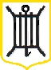

|

Dans le mitan de Jerri
Se trouve une pâraisse,
Le nom n'en est pas êcrit,
A dviner je l'laisse:
Tachiz de le dêcouvrir,
Car nou peut fort bein souffrir
Au jour qu'i' paraisse,
Vere-guia,
Au jour qu'i' paraisse
Du bord d'amont et d'ava
De vallons bornèe,
Le Nord en est haut et pllat,
Le Sud en vallèe;
Gardins, cllos, près nou vait là,
Côtils, moulins et cet'ra,
Qui belle contrèe,
Vere-guia,
Qui belle contrèe.
Et pis ch'est que donc ètou,
Nouz y vait des filles
Comme i' n'y-en a pas partout
Av'nantes, gentilles,
Ne lus piler pas sus l'pid,
Car i' s'avent se servir
D'agule et d'faucilles,
Vere-guia,
D'agule et d'faucilles.
Si ch'est qu'ous voulez saver
Le nom d'ma Vingtaine,
Inutile d'êprouver,
Epaingnous la peine:
Je me dêpêche d'acver,
J'm'en vais vite mesauver,
Ch'est à la prechaine,
Vere-guia,
Ch'est à la prechaine.
Je sis un St. Louorenchais,
J'n'ai pas d'peine de l'dire;
Je n'crai donc pas que j'devrais
Aver d'peux d'l'êcrire;
J'ai oui que deux en valent trais,
Mais si nouz est bouan Jerriais,
Chonna dait suffire,
Vere-guia;
Chonna dait suffire.
P.L.
26/1/1873 & 2/5/1873
|